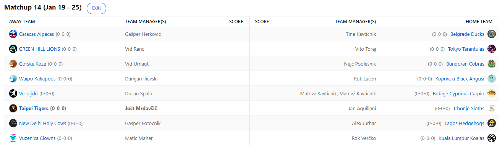

SEZONA 24/25
- Pravila in sistem tekmovanja
- Matchup1 (Oct 22 - Oct 27)
- Matchup2 (Oct 28 - Nov 3)
- Matchup3 (Nov 4 - Nov 10)
- Matchup4 (Nov 11 - Nov 17)
- Matchup5 (Nov 18 - Nov 24)
- Matchup6 (Nov 25 - Dec 1)
- Matchup7 (Dec 2 - Dec 8)
- Matchup8 (Dec 9 - Dec 15)
- Matchup9 (Dec 16 - Dec 22)
- Matchup10 (Dec 23 - Jan 29)
- Matchup11 (Dec 30 - Jan 5)
- Matchup12 (Jan 6 - Jan 12)
- Matchup13 (Jan 13 - Jan 19)
- Matchup14 (Jan 20 - Feb 26)
- Matchup15 (Jan 27 - Feb 2)
- Play-in (Feb 3 - Feb 23)
- Playoff 1 (Feb 24 - Mar 9)
- Playoff 2 (Mar 10 - Mar 23)
- Playoff 3 (Mar 24 - Apr 6)
2024/25 - Fantasy Koroška - sezona 8
MATCHUP 14 (Jan 20 - Jan 26)
Poročilo kroga
Vstopili smo v zadnji teden rednega dela 8. sezone NBA Fantasy Koroška in v zraku je več negotovosti kot smoga na Kitajskem. Odprta so tako rekoč še vsa vprašanja in mesta,
najbolj pa nas zanima Gajba Battle, kjer še vedno čakamo na odločitev med 6 moštvi, ki majhnega clinching X-a na lestvici še nimajo. Kasneje pride kratka predstavitev
tiebreaker situacije, čeprav je scenarijev miljonček.
Začnimo naprej kar na vrhu in na začetku. Taipei Tigersi so izkoristili spodrsljaj Vesoljčkov in s svojo 7. zaporedno zmago tik pred koncem prevzeli vodstvo na lestvici.
BYE je zagotovljen, potrebujejo pa zmago v zadnjem krogu za prvi seed. Najvišja razlika med prvim in drugim izkupičkom tedna v zgodovini lige je tudi rekorden
dosežek za Joleta in visokoleteče Tigre, še 4. najboljši score v zadnjih 6 tednih pa je vsekakor strah vzbujajoč podatek in kar nekako škoda, da bomo zdaj en
mesec prosti. Geps je sicer bil v igri in niti ni imel tako slabega tedna, a petkovih 300+ točk od 6 (!!!) igralcev ga je pahnilo v prevelik zaostanek, da bi še
lahko sanjal o zmagi. Ga pa vendarle ta poraz ne bo prizadel preveč, končnica je zagotovljena, mesta okoli deseterice pa tudi in zdaj lahko, ko se je vrnil še Wagner,
računa na nove zmage proti sebi bolj primernim tekmecem xD.
Veliko je ta teden izgubil Dule, ki je bil zdaj kar dolgo na prvem mestu, a tokrat so mu Bundoranske Kobre prekrižale načrte in zdaj potrebuje zmago v zadnjem krogu, ali pa poraz Herkona,
če želi imeti mesec februar prost. Dušan se lahko tolaži z dejstvom, da še vedno drži najboljši score tedna in se mu tako obetata dve denarni nagradi že samo za redni del.
Sezona pokrita. Zmago je vsekakor bolj potreboval njegov tokratni nasprotnik – Cicko. S to zmago si je malodane zagotovil končnico, edini način da lanski prvak izpade je,
da izgubi, medtem ko vsa 4 moštva s 5-9 scorom zmagajo. Znanstvena fantastika tako rekoč in videli bomo, ali lahko Belouške vendarle najdejo kaj strupa in začnejo gristi
nasprotnike v končnici.
Drugi BYE kandidat, ki kakopak potrebuje zmago in poraz Vesoljčkov, pa je Herko. Slednjemu bi februarski stress-free dopust vsekakor dobro del, kajti poškodbe so se resno lotile njegovih Alpak,
ravno zdaj ko je to lahko hitro usodno. K sreči je svoje upe pravočasno položil na pleča svojega najljubšega košarkarja, Vita Krejčija, ki bo ob poškodbah Atlantinih prvih
zvezdnikov vsekakor močan adut za Gašperja. Tokrat mu je načrte sicer prekrižal Voka s svojimi Angusi. Ko je začela voda resno teči v grlo Roku, se je le ta odločil, da je
dovolj zajebancije in z nekaj močnimi potezami na trgu prišel do zmage. Ironično je, da bi najbrž izgubil, če ne bi izpeljal trejda, ki je vključeval Janisa, slednji je
zaradi prestavitve tekme namreč bil ta teden precej slabši od dvojca Lamelo&Collins. Z živalsko blokado se je sicer znašel na vrhu highlightov 4. SKL, bo pa potreboval
precej takšnih podvigov tudi od svojih fantasy varovancev – prav mogoče je namreč, da bo odločalo skupno število točk, kjer trenutno zaostaja za 53 za svojim glavnim
protikandidatom.
Na četrtem mestu pa najdemo njegovega trejd partnerja Vita Toreja. Z naskokom najuspešnejši rookie je tudi tokrat uspel zabeležiti zmago. Sicer je moral nekoliko švicati še v edini nedeljski tekmi,
a SGA in Hartenstein sta vendarle nabrala nekoliko premalo točk, da bi Kavt uspel preobrniti izid. Prav njega je s tem Vito tudi izrinil s 4. mesta in ga prehitel, sta
pa seveda oba že davno na varni strani in uvrščena v končnico. Kateri izmed milijon scenarijev se bo zgodil, tako Vito kot Kavt lahko namreč sezono zaključita med
3. in 10. mestom tako rekoč bilo kje. Bo gofljosuk Matevž, ki mu poškodba trenutno resno otežuje njegovo najljubše opravilo, sploh nevaren komurkoli v končnici,
ali pa je njegovih 5 minut oz. 7 tednov slave že minilo in bo lahek plen za kakšnega bolj resnega kandidata za najvišja mesta?
Prišli smo že do 6. mesta, kjer zdaj najdemo Aleksa Jurharja. Njegovi Ježki so v izvrstni formi in ne bi mogli najti boljšega časa, da se ogrejejo. Tokrat so se sprehodili mimo
Gorskih Koz in v nekaterih scenarijih bi lahko Aleks zaključil sezono celo na tretjem mestu, po tem ko je slabo kazalo na začetku. Nekateri ga trenutno celo
uvrščajo med top3 kandidate za vrh, a za kaj takega bo njegovih 6-7 vprašajev postati klicaj. Kaj reči na drugi strani za Urnauta … Še vedno je sicer na 50%
izkupičku, a se vendarle zdi, da je začel popuščati ob najbolj nepravem času in bo to še ena klavrna sezona za Čečovski veleum. Upamo, da vsaj trenira FIFO
in bo ob priliki pripravljen na poraze tudi na tem področju.
Drugo najbolj vroče moštvo lige in tisti, ki se ga bodo želeli v play-inu prav vsi izogniti pa je Maher. Njegovi Klovni so trenutno v nizu kar 6 zaporednih zmag in prav nič ne kaže,
da se imajo namen zaustaviti. Po tem ko je že kar tradicionalno na začetku kazalo, da bo šlo za novo gajbo Maherja, pa je Matic pritisnil na plin in mu zdaj kaže
izjemno dobro. Kaj lahko bi sezono zaključil celo med prvih 5, potrebuje pa seveda zmago in nekaj ugodnih izidov v drugih matchupih. Še sprehod je močna beseda za
to kar je doživel v tem matchupu, zmaga za kar 477 točk je bila seveda najvišja v tem krogu in Beograjske Račke so res bile nedorasle svojemu nasprotniku. V nekaterih
scenarijih lahko Mali Mali Floaterček Tine še tudi izpade, zato pričakujemo veliko resnosti v zadnjem tednu, kar je potrdil tudi z oddajo predictionov brez opozorila
že nekaj čez pol enajsto. Čudeži se dogajajo, ga lahko pripravi tudi v 15. tednu in premaga favoriziranega Herkona?
V zlati sredini se skrivajo tudi Kualalumpurške Koale, ki so se z dokaj tesno zmago nad Kupsom zdaj pozicionirale na 8. mesto. Jokič je ponovno blestel, med drugim tekma z 90
fantasy točkami in dokler je debeli konjenik zdrav, je Verčko lahko nevaren vsakomur. Kups je sicer poskušal s podpisi v nedeljskem sporedu, a tokrat mu ni
uspelo ponoviti prve runde playoffov izpred dveh let, ko mu je takšen podvig prinesel naslednjih krog. Isaiah Joe je bil previsoka ovira. Kups še ni na varni
strani in kaj lahko se zgodi, da celo izpade, čeprav v rokah drži tiebreakerje z Ilijo in Vokanom. Morda bo odločilno celo skupno število točk, kjer za zdaj
vodi s 53 točkami razlike, a Angusi letijo visoko in Lenivci ta teden nikakor ne smejo zabušavati.
Ostal nam je le še neposredni obračun v gajba battlu, kjer sta se udarila rookija Ilja in Ranc. Slednji je razočaral in tako rekoč brez boja izgubil v tej bitki za vstopnico na
poslednji vlak za končnico. Izkazalo se je, da ima tudi poraženec še teoretične možnosti za uvrstitev, a znašajo ubogih 17% in poleg zmage nad Vesoljčki bi
Vid potreboval še nekaj ugodnih rezultatov ostalih moštev, da bi se še lahko izvlekel. Na drugi strani pa se je očitno izvlekel Damjan, ki ga ta zmaga zdaj
uvršča na 14. mesto, ki ravno še vodi naprej. Algoritmi mu pripisujejo 17% možnosti, da vendarle izpade, točen scenarij, ki to prinaša pa vključuje kar nekaj
za lase privlečenih dogodkov.
Kaj pričakovati v zadnjem tednu? Vsekakor nas najbolj zanimajo obračuni moštev s scorom 5-9. Lahko kdo izmed Slothsov, Kakapojev, Ducksov ali Angusov preseneti na papirju močnejšega
tekmeca in si s tem malodane zagotovi vsaj 12. seed? Na drugi strani lestvice bo zanimivo spremljati obračun za drugo BYE pozicijo med Alpakami in Vesoljčki,
končno prvo mesto pa si z zmago zagotovijo Tigri. Vmes je scenarijev za mesta med 3 in 10 neskončno in vse do zadnjega ne bomo imeli natančne slike bracketa,
kar letošnjo sezono dela res izjemno zanimivo.
Srečno vsem in ne pozabite na predictione!